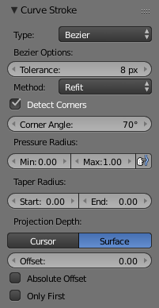

绘制曲线¶
参考
编辑模式
控制面板：
菜单:
快捷键:
Shift-LMB曲线绘制工具用于手绘曲线。
笔触选项¶

Curve Stroke 面板。
可以找到下面的选项。
- 类型
绘制的曲线类型
- 多段线
- Bézier Curve with straight line segments (auto handles).
- 贝塞尔
- 容差
- 值越低越接近绘制笔迹，相反，值越高结果更加平滑。
- 方法
- Refit
- 逐步地重新绘制曲线(给出最好的结果)。
- 拆分
- 拆分曲线直到满足容差值(给出更好的绘画性能)
- Detect Corners
侦测拐角，并使用非对齐控制柄。
- Corner Angle
- 大于该角度的任何角度视作拐角。
- Pressure Radius
- Min
- 低压时的最小半径(也就是变尖时的最小半径)
- Max
- 压力最大时的半径(或者不使用绘图板时的半径)
- Projection Depth
用于控制绘制曲线位置和方向的选项。
- 光标
- 使用光标所在平面为绘制平面。
- 面
使用其他物体表面作为绘制平面。
- 偏移量
- 曲线相对表面的偏移距离。
- Absolute Offset
- 应用定值偏移(不能使用曲线半径缩放)。
- Only First
使用笔画起点确定绘制平面深度。
- Normal/View
- 绘制平面垂直于表面。
- Normal/Surface
- 绘制平面与表面平行。
- 视图
- 绘制平面与视图平面平行。
绘制选项¶

绘制曲线面板
These options can be found in the Redo Last Panel.
- 错误
- 距离误差，与曲线的细分率相似。值越低越接近绘制笔迹，相反，值越高结果更加平滑。
- Fit Method
- Refit
- 逐步地重新绘制曲线(给出最好的结果)。
- 拆分
- 拆分曲线直到满足容差值(给出更好的绘画性能)
- Corner Angle
- 大于该角度的任何角度视作拐角。
- 循环
- 是否切换曲线为 Cyclic 。